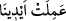

kimsenin amelinden temsîlî istiâredir.[176] Çünkü Allah Teâlâ organlardan münezzehtir.
Kâşifî der ki: “İnsanlar arasında bir darb-ı mesel vardır: Tek başına yaptığı iş hakkında
“Ben bu mühim işi kendi elimle yaptım” der. Yâni bu işi yaparken başkası bana yardım
etmedi demektir. Araplara ancak karşılıklı konuşmalarında kullandıkları sözlerle hitap
edilmiştir. Bu âyette de Allah Teâlâ: ‘Biz onlar için bizden başkasının ortaklığı
olmaksızın kendimiz yarattık’ buyurmaktadır.”
Râğıb der ki: “__WORD__ kelimesi “__WORD__” kelimesinin çoğuludur. Uzuv olan el mânâsınadır.
Mânâyı bize tasvir etmek için özelikle “el” zikredilmiştir. Çünkü insanlar arasında daha
çok işlerin yapıldığı organların en değerlisidir.”
Kutebî der ki: “Burada “__WORD__ kelimesi kudret ve kuvvet mânâsınadır. “
(ellerimizin yaptığı/kudretimizin eseri olmak üzere)” sözü ise her ne kadar bu fiil bizzat
elle yapılmamış olsa da el ile yapılmış gibi anlatılmasıdır. Bu söz “Bu köprü, bu köşk
falanın elleriyle binâ edilmiştir.” demek gibidir. Haberde der ki: “El, (başkasına âid)
aldığı malı, (mâlikine) ödeyinceye kadar o maldan sorumludur.”[177] El ile müdahale
olmasa da emânet edâ edilmelidir. Meselâ “Malım falancanın elinde. Yetim kayyımın
(veli veya vasî) eli altındadır.” sözlerinde el, o şeye sahip olmaktan ve onu kontrol
altında tutmaktan kinâyedir.
el-Es’iletü’l-mufhıme’de der ki: “Burada “__WORD__ sıladır ve Allah Teâlâ’nın “
(Kendi ellerinizle işledikleriniz yüzündendir.)” (eş-Şûrâ, 42/30) kavli
gibidir. Eli ve yüzü tüm bedenden kinâye olarak kullanmak Arapların âdetidir.”
Gerçekte bu mânâlar hep birbirine yakın mânâlardır.
“__WORD__ kelimesi, “__WORD__ ifâdesinden sonraki kendisiyle ilgili hükümlerle bir araya
getirilmek için ertelenmiştir. “__WORD__” kelimesinin çoğuludur. Yumuşak yürüyüşlü olan deve,
sığır, koyun ve keçi gibi otlayan hayvanlardır. Sert yürüyüşlü olan at, katır ve merkep
buna dahil değildir. Allah’ın yarattığı madenler, bitkiler ve deve, sığır, koyun ve
keçiden başka hayvanlar arasından bu hayvanlar özel olarak zikredilmiştir. Çünkü bu
hayvanlarda devede olduğu gibi benzersiz yaratılış özellikleri, inek, koyun ve keçide
olduğu gibi bir çok faydalar vardır.
“Bu sayede onlar bunlara sahip olmuşlardır.”
Şeyhzâde buradaki “fâ” sebebiyet içindir der. “__WORD__ ise sahip olmak ve tasarruf
etmektendir. Yani bu sebeple onlar bizim kendilerini o hayvanlara sahip kılmamızla
mâlik olurlar. O hayvanlar üzerinde tamamen bağımsız olarak tasarrufta bulunurlar. O
hayvanlardan faydalanmak onlara özel kılınmıştır. Bu konuda başkaları onlara karışmaz.